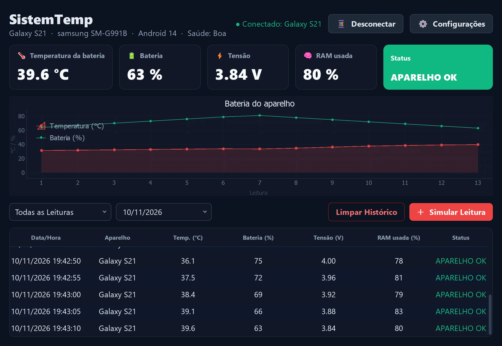
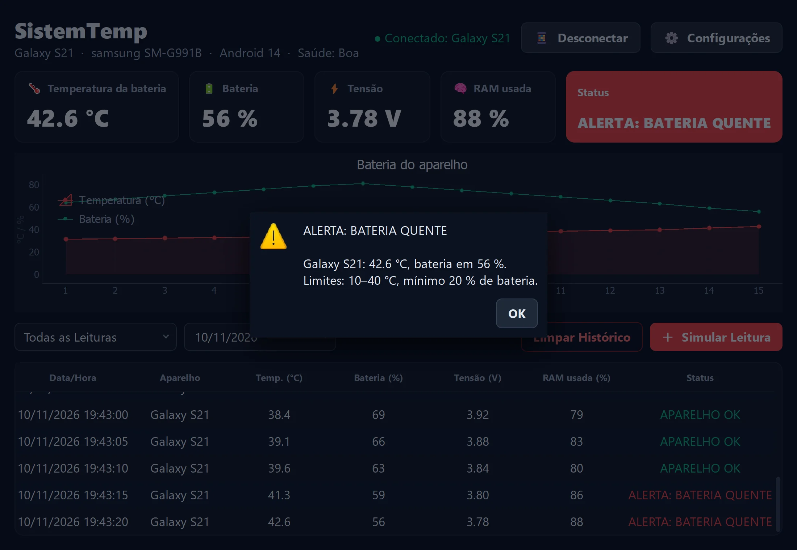
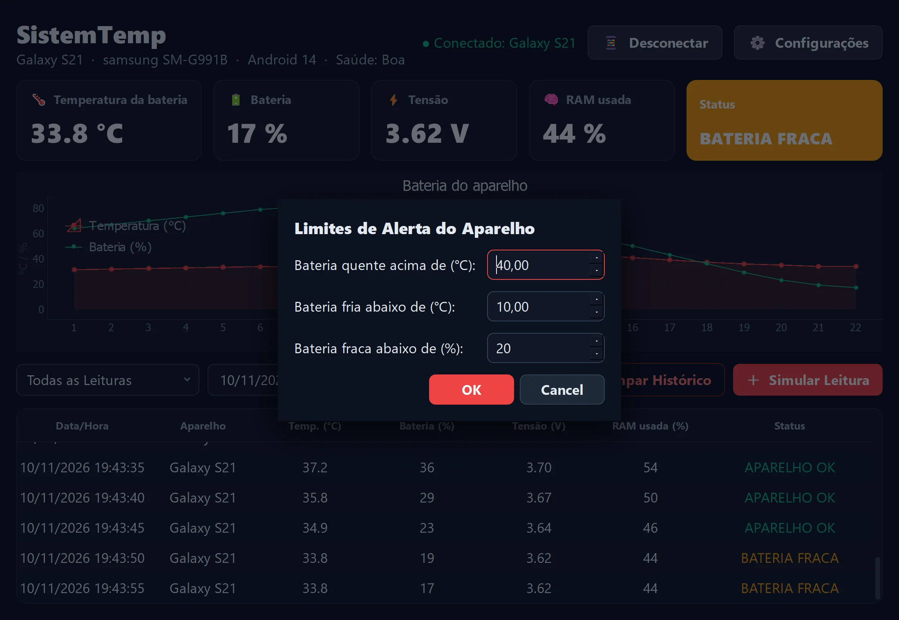
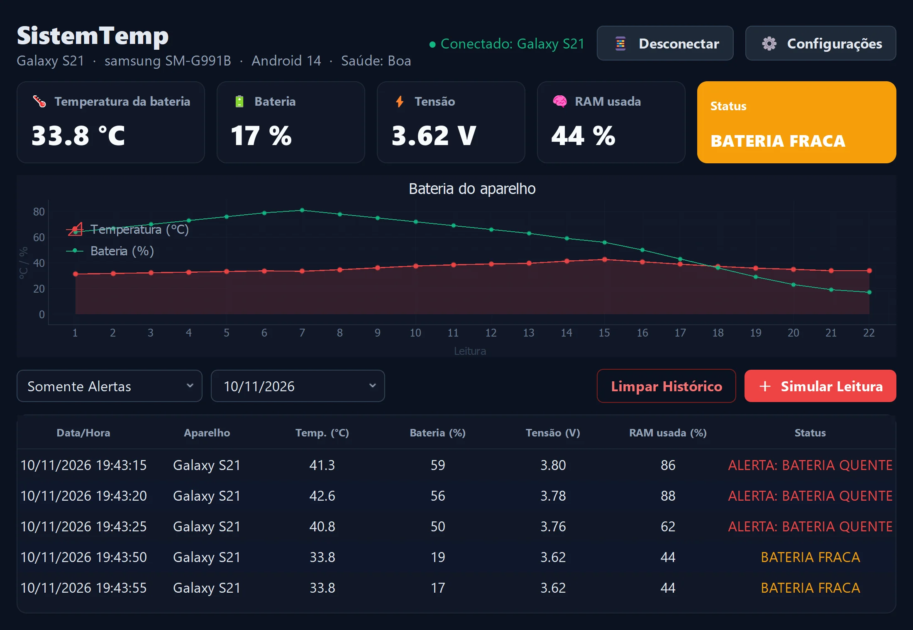

SistemTemp
Monitor do celular no PC: um app Android manda por Bluetooth a temperatura e o nível da bateria, a tensão e a RAM, e o desktop mostra tudo ao vivo com alertas, gráfico e histórico.Your phone, monitored from the PC: an Android app sends battery temperature and level, voltage and RAM over Bluetooth, and the desktop app shows it live with alerts, a chart and a history.
 0
0

O que fazWhat it does
- Conecta ao celular Android por Bluetooth e mostra o nome, o modelo, a versão do Android e a saúde da bateria.
- Connects to an Android phone over Bluetooth and shows its name, model, Android version and battery health.
- Cards ao vivo com temperatura da bateria, nível (⚡ quando carrega), tensão e RAM usada.
- Live cards for battery temperature, level (⚡ while charging), voltage and RAM in use.
- Status que muda de cor: aparelho OK, carregando, bateria quente, bateria fria ou bateria fraca, com aviso só quando entra em alerta.
- A status that changes color: device OK, charging, hot battery, cold battery or low battery, with a warning only when it enters an alert.
- Gráfico com temperatura (°C) e bateria (%) na mesma linha do tempo.
- A chart with temperature (°C) and battery (%) on the same timeline.
- Histórico salvo em SQLite, com filtro por data, só alertas ou só carregando.
- History saved in SQLite, filtered by date, alerts only or charging only.
- App Android que lê o aparelho a cada 5 s, guarda o próprio histórico e envia ao PC.
- An Android app that reads the device every 5 s, keeps its own history and sends it to the PC.
- Limites de alerta configuráveis, log de eventos e modo escuro. Sem celular, o botão Simular Leitura gera dados de teste.
- Configurable alert limits, an event log and dark mode. No phone? The Simulate reading button makes test data.
Como funcionaHow it works
Duas partes. No celular, um app Android em Kotlin lê a bateria e a memória e manda uma linha JSON a cada 5 s pelo Bluetooth (SPP). No PC, um app em Python com PyQt5 recebe pela porta COM do Bluetooth, valida cada leitura e mostra na tela. O desktop segue MVC: as telas são arquivos .ui do Qt Designer, as regras de alerta ficam no model e um controller cuida de cada parte (janela, Bluetooth, gráfico, histórico e configurações). O gráfico usa pyqtgraph e o histórico fica num SQLite local.Two parts. On the phone, an Android app in Kotlin reads the battery and memory and sends one JSON line every 5 s over Bluetooth (SPP). On the PC, a Python app with PyQt5 takes it from the Bluetooth COM port, validates each reading and puts it on screen. The desktop side is MVC: the screens are Qt Designer .ui files, the alert rules live in the model and one controller handles each part (window, Bluetooth, chart, history and settings). The chart uses pyqtgraph and the history sits in a local SQLite file.
Como rodarRun it
git clone https://github.com/SamuelSchutz13/SistemTemp.git cd SistemTemp pip install -r requirements.txt python main.py # celular: cd android && gradlew assembleDebug
ImagensImages


